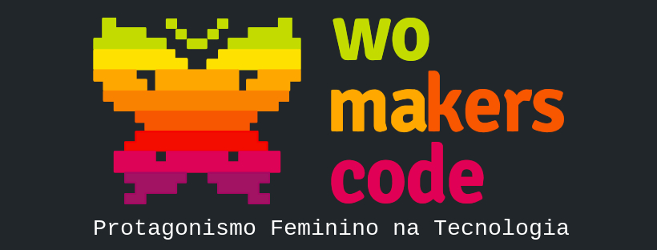

>Hello!
>My name is Heloisa and I'm from Brazil
>I'm a 24 years old software developer, who works with back end development (C#, .NET)
>And have had experience with front end development
>I have been studying and also really into cloud computing and cybersecurity, with emphasis in social engineering.
>My passion is participating in the tech community worldwide, to meet new people and to learn new things, including things that aren't tech related (even though for me, everything is tech related somehow)
>My main objective is to become a Cloud Security Engineer and I'm working really hard for that to happen!

>Tecnical Skills


>Soft Skills
>I'm a very communicative person and I'm working really hard to improve it at my job
>Communication is key, asking questions and being open about the struggles I have in my daily tasks is important to me
>I value having a good relationship with my colleagues. I think it's important to have empathy with others, caring about their struggles at work, and trying to help them. Sharing is caring
>I'm not a competitive person. Cooperation is vital in work and the most important thing in a team
>When someone tries to teach me something I will always sit down, pay attention and listen. Everyone, from seniors to beginners can teach me a lot of things. I find it important to listen with interest
>And when I can teach or help someone with my experience, I will always be there and do everything I can to help and explain every little detail
>I'm a self-taught developer
>I'm really curious with also means that I love learning
>Experiences
>Since december/2021 I'm a Software Developer Jr @ Localiza, here in Brazil.
>What do I work with? Development, legacy systems, using
technologies/tools: C#, Javascript, .NET
Core/.NET Framework, Domain Driven
Design, Sensedia (API Gateway), SQL
Server, Azure DevOps, monitoring through
AppDynamics and Datadog, Scrum Agile.

I'm a volunteer since february/2022 @ WomakersCode, a global community where the mission is to empower women in technology.
A little about me
>I love going to tech events! Even thought I only had the opportunity to go to a few of them here in Brazil. I hope I can go more in the future! :)
>I love reading 📚
>Music is my life 🎵
>I like to read about psychology and neuroscience! ğŸ§
>I love history and biology! 🐛🦇🦴🖼🧬📝
>Before I became an IT professional, I dreamed about being a Doctor 👩‍⚕️
>My first contact with web development was at Neopets with 6 years old.
>Videogames have a important role in my life 👾
Contact me!